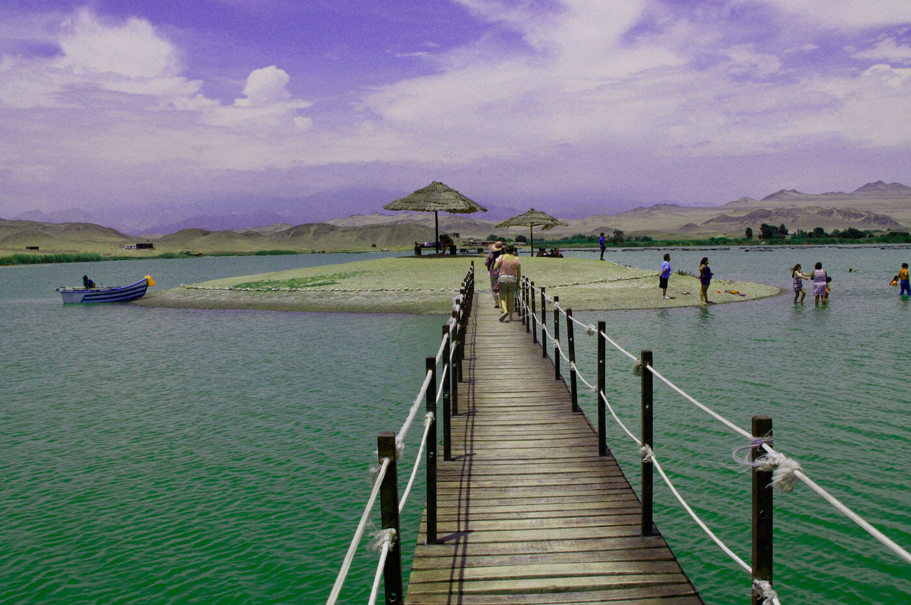

CONFERENCIAS
Imagen representaiva de La Laguna Encantada.
Como parte del VI Concimar Perú se ha considerado la participación de grandes conferencistas de renombre en el campo científico, del Perú y demás países extranjeros.

CONFERENCISTAS
- Dr. Jorge Csirke Barcelli. Dirección de Ordenación de la Pesca y la Acuicultura. FAO - Roma
- Ing. Ernesto Godelman (Argentina): “Los puntos biológicos de referencia y el manejo de las pesquerías bajo el enfoque ecosistémico”.
- MSc. Patricio Arana (Chile): “Las pesquerías de profundidad en el Pacífico Suroriental”.
- Dr. Luis Icochea Salas (Perú). “La corriente de Cromwell y su importancia en la distribución de recursos pesqueros frente al Perú .
- Dr. Ricardo Fujita Alarcón (Perú). “Análisis genético poblacional de los recursos marinos por marcadores moleculares”.
- Dr. Josué Alvarez - Borrego (México). "Identificación automática de algunos especies de plancton mediante algoritmos matemáticos".
- Ing. Miguel Gallo Seminario (Perú). “La certificación sanitaria y la exportación de recursos pesqueros en el Perú”.
- Dra. Sonia Valle (Perú). "Otolitos como herramienta de reconstrucción de historia de vida de los peces"
- Dr. Aquiles Sepúlveda (Chile). “Los Institutos de Investigación privados y la empresa pesquera: el caso de INPESCA, Chile”.
- Ing. Richard Inurritegui Bazán (Perú). "Situación actual de la actividad pesquera industrial en el Perú".
- Blgo. Pesq. Yuri Hooker (Perú). "Proyecto Esponjas del Perú: aporte al conocimiento de la biodiversidad y biogeografía del litoral peruano".
- Ing. José Maria Boluarte (Perú). “Mediciones satelitales: herramientas para el seguimiento de eventos climáticos como El Niño y el Calentamiento Global”.
- Ing. Jorge Zuzunaga Zuzunaga (Perú). “Situacion actual y plan de desarrollo de la maricultura en el Peru”.